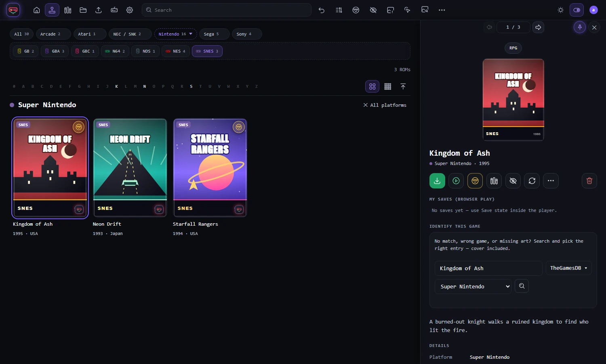
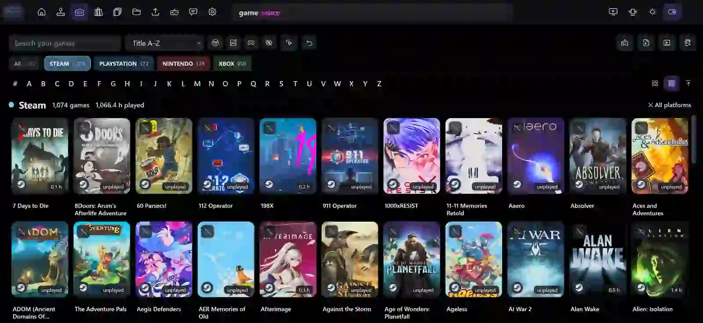

Scans your folders in place
Point it at the folders you already have. Files are catalogued where they are and never moved, renamed or deleted, and one bad file never stops a scan.
Free · open source · self-hosted
game-sauce catalogues the games you own, fetches the artwork, plays many of them in your browser, starts the rest in the emulators on your PC, and puts the whole library on the TV with a gamepad-driven Big Screen.
Windows · macOS (Apple silicon) · Linux · Docker, Unraid and Proxmox · Raspberry Pi

Screenshots use built-in demo data with generated covers.
One place for the whole household's library, running on a machine you control.
Point it at the folders you already have. Files are catalogued where they are and never moved, renamed or deleted, and one bad file never stops a scan.
Covers, descriptions, years and more from ScreenScraper, TheGamesDB, IGDB and SteamGridDB using your own accounts, or import artwork from folders and upload your own.
Many older consoles run straight from a web page, with save states and in-game saves kept per person on your server. A Continue playing row remembers where you were.
One click starts a game in the emulator installed on your own computer, such as RetroArch, MAME or Dolphin. Games can be kept for quick relaunch, and a setup page configures each emulator.
A full-screen, gamepad-driven view for the sofa: a wheel of games with logos and marquees, favourites and collections, an A to Z strip, manuals on screen, and sounds you can mute.
Favourites, private collections and hidden games, plus accounts for the people you trust, including play-only accounts with no downloads or admin.
Verify dumps against No-Intro and Redump DATs, find duplicate versions and suggest the best copy to keep, and clear out unused artwork files, without deleting your games.
Bring in your Steam library with the hours you have played, and your PlayStation, Nintendo and Xbox games from a list. Track the discs and cartridges you physically own too, all next to your ROMs.
No account, no subscription and no cloud. Your library and its data stay on your hardware, in a database you can back up and restore from the app.
Two short clips from the built-in demo library.
A full-screen view built for a gamepad and a sofa. Open it from the Library with one click, and put the browser or the desktop app full screen on the TV.


Classic and Modern looks, light and dark. Same library, your choice.





Pick the one that suits you. Each takes a few minutes.
Download the desktop app or the portable version for Windows, macOS or Linux. Nothing else to install: no server, no Docker, no settings to edit.
Download the latest releaseRun it with Docker, on Unraid or in a Proxmox container, and use it from every device in the house. The deployment guide has the steps.
Read the deployment guideThe first time it starts, the account that was made for you is shown once. Write it down and change the password in Settings. If you expose it to the internet, put it behind a VPN or a reverse proxy with HTTPS.
No. game-sauce is for managing games you own. It doesn't include or supply games or BIOS files, and it doesn't download games for you: you bring your own collection. For playing, browser play runs on EmulatorJS, an open-source emulator that your browser loads when you press Play. For play on your PC, the Emulators page recommends emulators and links to where to get them, and the launcher starts the ones you install yourself.
Yes. It's open source under the MIT licence. There is no account to create, no subscription and no tracking. Some metadata providers ask you to sign up for your own free account to use their service.
Many older consoles that need no BIOS work from a web page. Newer systems, and anything that needs more than a browser can offer, start in an emulator on your PC through the launcher instead.
Not in the folders you point it at. It reads them where they are and never moves, renames or deletes the files in them. The clean-up tools only touch artwork and files that game-sauce stored itself.
Yes. Make accounts for the people you trust. Collections are private to whoever made them, and play-only accounts see just the games that can be played in the browser.
Open an issue or a discussion on GitHub, or email hello@gamesauce.app. The System health page in Settings makes a copy-and-paste report with no secrets in it.